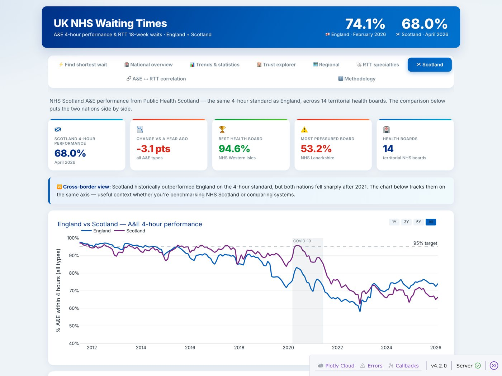

Analytics and dashboards
NHS Waiting Times Dashboard
Five years of NHS England A&E and referral-to-treatment data, combined with NHS Scotland data in one database. A patient picks a specialty and region and sees the fastest providers and how many weeks they could save by switching.
237trusts
141,504treatment rows
p < 0.001decline in 4-hour A&E performance
PythonSQLSQLitepandasPlotly DashMann-Kendall test
On free hosting, so it can take a minute to wake up.